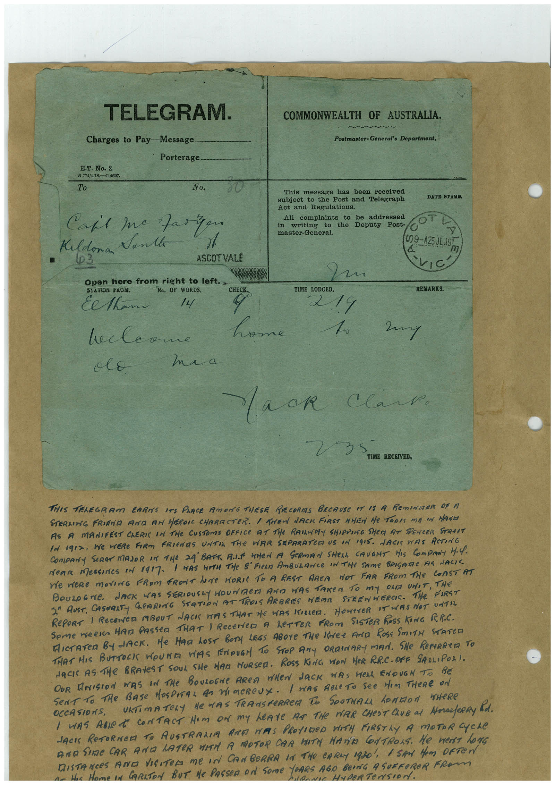

Book 1 · scan 008


Description
Transcription
Context
Review notes
Compare the machine draft with the scan. Handwriting and names need human review.
Artifacts
Edit the artifacts field in this note’s frontmatter to change these records. This summary is generated.
B01-S008-A01 — Telegram, Newspaper clipping & Handwritten note — Book 1, scan 008
Types: Telegram, Newspaper clipping, Handwritten note
Scope: Whole scanned page; individual items can be split out during review.
Caption: Not mapped yet.
Caption source: Not recorded yet.
Caption status: unmapped
Machine transcription
TELEGRAM. Charges to Pay-Message Porterage. E.T. No. 2 D.79/4.8.0.90316 To No. Caft me Fairyon Kildonan Vanta • 03 ASCOT VALE 20000 Open here from right to left.. SIATION EKOM. No. OF WORDS. CHECK. Eethan 14 hecleane olE home ma a COMMONWEALTH OF AUSTRALIA. Postmaster-General's Department, This message has been received subject to the Post and Telegraph Act and Regulations. All complaints to be addressed in writing to the Deputy Post- master-General. DATH STAME OT (29-425JL195 TIME LODGED. 219 REMARKS. 2my Mack Clark. TIME RECEIVED, THIS TELEGRAM EARNS ITS PANCE AMONG THESE RECORAS BECAUSE IT IS A REmINDER OF A STERLING FRIEND AN AN HEROIC CHARACTER. I TREN LACK FIRST NHEN He TODIS ME IN MANE AS A MANIFEST ChERIS IN THE CUSTOMS OFFICE AT THe RAMAY SHIPPING SHER AT SPENCER STReET IN o9I2. We WERe FIRM FRIeNS UNTIL THe VAR SEPARATOR US IN IGIS. JACI WAS ACTING NeAR MessInes oN 1917- I WAS WITH THe & FIERA AmBULANCE IN THe SAme BRIGARE AS LACIE ne weRe movinG FRoM FRONT hOMe HORIE TO A REST ARCA NOT FAR FROM THe COAST AT BOULoGNe. JACK WAS SERIOUSLY HOUNDeD AND WAS TAKEN TO mY OLA UNIT, THe 2ª AUST. CASUALT GEARING STATION AT TROIS ARBRES NEAR STEENHERCE. THe FIRST RePORT 1 RECENCE ABOUT NACK HAS THAT He HAS KILLER. HOWEVER IT WAS NOT UNTIL Seme meera HAM PASSeD THAT 1 ReCeNCO A LeTTER FROM SISTER ROSS KING RR.C. MICTATeR BYJACK. He HAD LOST BOTy LEGS ABOve THe Kee AND ROSS SmITH STATED THAT HIS BUTTOCK WOUNA VAS ENDUGM TO STOP ANY ORDINARI MAN. SHe REPERRErA TO NACK AS THE BRAVeST SOUL SHe MAn MURSeR. ROSS KING WON HeR RR.C. ORE SALLIPOLI. OUR ANISION WAS IN THe BOULOGNe AREA WHEN JACK WAS HEAL ENOUGN To BE Sent to THe BAse HOSPITaL As WImeRCUX. I WAS ABLeTO See HIm THeRe ON URTIMATELY HE WAS TRANSFeRRER TO SOUTHALL hOMMON THeRE I WAS ABLe R CONTACT Nom oN my LeAve AR THe MAR CHeST ChUB al MorefeRRy Rod. JACI ReTURNeD TO AUSTRALIA ARE MAAS PROVIDeD WITH FIRSTLY A MOTOR CYCLe AND SINE CAR AND LATER WITH A MOTOR CAR BIT HAnTA CONTROLS. He merT LoNG DISTANCES AND VISITeR Me IN CANBeRRA IN THe CARLY 1930, 1 SAN HAm OFTEN she Hame in CARAToN BUT He PASSeR oN SOme YORS AGO BeDra A SURReROR FROm